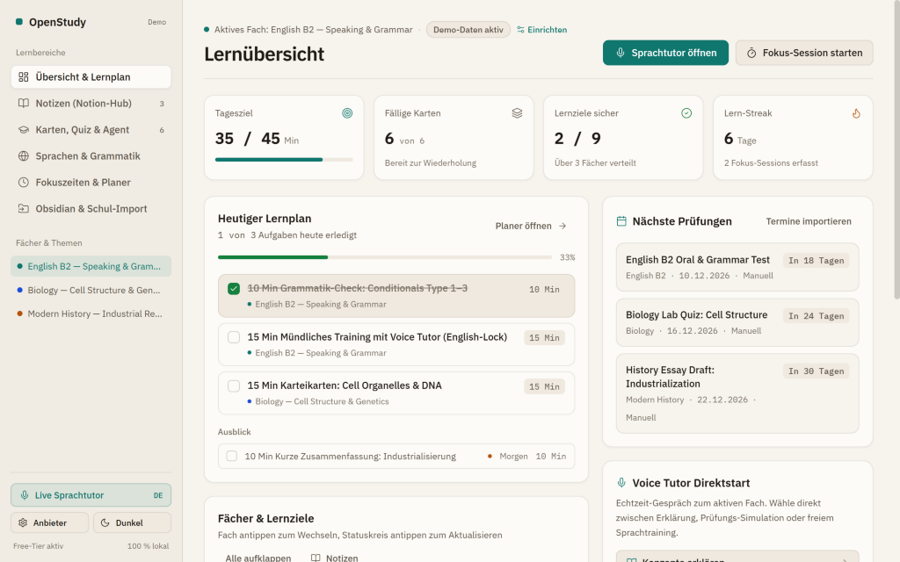

Ruhig lernen mit eigenem KI-Sprachtutor, Notizen und Fokus-Planer.
OpenStudy vereint Echtzeit-Sprachtraining, eine integrierte Notion-Alternative, lokalen Obsidian-Sync und Karteikarten in einer klaren Oberfläche — für Schule, Studium und Selbststudium. Kostenlos startbar und vollständig unter deiner Kontrolle.

Google AI Studio Free Tier mit Sicherheits-Sperre oder 100 % offline mit Ollama.
Kein Konto, kein Cloud-Zwang. Notizen und API-Keys bleiben auf deinem Computer.
Frei sprechend üben mit Stimmen-Vorschau, ruhigem Tempo und Sprach-Sperre.
Eigener Block-Editor sofort nutzbar oder bestehende Obsidian-Vaults verknüpfen.
Ein Blick ins Lernstudio
Gestaltet für lange Lerneinheiten ohne visuelle Unruhe. Klicke auf eine Ansicht, um das Vorschaubild in voller Größe zu prüfen.
Entwickelt für nachhaltiges Verstehen
Vier aufeinander abgestimmte Bausteine ersetzen verstreute Tools — komplett ohne monatliche Gebühren oder Herstellerbindung.
Free-Tier Voice-Tutor
Besprich komplexe Themen mündlich oder simuliere Prüfungsgespräche — mit direkt konfigurierbarer Stimme und klarem pädagogischem Modus.
- Stimmen-Preview vor dem Start (6 natürliche Stimmen)
- Einstellbares Sprechtempo (Langsam, Ruhig, Normal)
- Language-Lock & In-Depth-Erklärungen auf Abruf
Notion-Alternative & Obsidian-Vault
Halte Lernstoff übersichtlich fest, ohne ein weiteres Cloud-Abo. Nutze den eingebauten Block-Editor oder öffne direkt deinen Obsidian-Ordner.
- Überschriften, Merksatz-Boxen, Code-Blöcke und To-dos
- Lokale Markdown-Notizen & [[Wikilinks]] direkt als Kontext
- Sofort einsatzbereit — ganz ohne externe Einrichtung
Multi-Provider & eigene Agents
Du entscheidest, welches Modell antwortet — vom kostenlosen Free Tier bis zu lokalen Modellen und deinen installierten CLI-Agents.
- Google AI Studio Free Tier mit aktivem 0-CHF-Schutzschalter
- Komplett offline über lokales Ollama (z. B. Gemma 3)
- Antigravity, Claude Code, Codex CLI, OpenRouter & Anthropic
100 % Privatsphäre & Open Source
Kein Benutzerkonto, keine Analyse-Skripte, kein Verkauf von Lerndaten. Der gesamte Quellcode steht unter der MIT-Lizenz offen.
- Alle Notizen, Karten und Keys bleiben lokal im Browser
- JSON-Backup entfernt API-Schlüssel automatisch beim Export
- Funktioniert für Notizen, Karten & Timer auch ganz ohne KI
Datenschutz als Grundprinzip, nicht als Aufpreis
OpenStudy speichert deine Lerninhalte ausschließlich auf deinem Gerät. Nur wenn du aktiv eine KI-Antwort anfragst, wird der benötigte Kontext direkt an den von dir gewählten Anbieter oder dein lokales Ollama-Modell gesendet.
Lokaler Speicher & volle Kontrolle
Kurse, Lernfortschritt, Fokus-Logs und API-Keys verbleiben im lokalen Speicher deines Browsers. Du kannst sie jederzeit sichern oder komplett zurücksetzen.
Eingebaute 0-CHF-Sperre
Der Free-Only-Schalter begrenzt die Modellauswahl standardmäßig auf kostenlose Stufen und lokale Anbieter — keine unerwarteten Rechnungen.
Geprüfte Backup-Exporte
Beim Export deiner Daten als JSON werden sensible Schlüssel automatisch herausgefiltert, damit du Backups sicher teilen oder archivieren kannst.
Für alle — ohne Vorwissen
In drei klaren Schritten startklar auf Windows, macOS oder Linux. Ideal für Lernende, Eltern, Lehrpersonen und Studierende jeden Alters.
Installer herunterladen
Lade die passende Datei für dein System herunter und starte sie per Doppelklick. Der Assistent prüft automatisch, was auf deinem Computer benötigt wird.
Optional: Obsidian gleich mitinstallieren
Während der Einrichtung kannst du per einfachem Häkchen wählen, ob der kostenlose Notiz-Speicher Obsidian automatisch mitinstalliert und verknüpft werden soll.
Lernziel wählen & loslegen
Beim ersten Öffnen führt dich der 3-Schritte-Assistent durch Sprache, Tagesziel und optional deinen kostenlosen Google AI Studio Key. Oder starte direkt ohne Key.
Grafischer 1-Klick-Installer mit Desktop-Verknüpfung und optionaler Obsidian-Einrichtung.
OpenStudy-Setup.exeGeführtes Installationsskript per Doppelklick inklusive optionalem Obsidian-Häkchen.
Install-OpenStudy.commandShell-Installer für Ubuntu, Fedora, Arch & Debian mit Desktop-Starter und Obsidian-Option.
install-openstudy.shFür Entwicklerinnen, Entwickler & lokale CLI-Agents (Antigravity, Claude Code, Codex) Quellcode starten
# 1. Abhängigkeiten installieren und lokal starten
npm install
npm run dev
# 2. Optional: Lokale Agent-Bridge für Antigravity (agy), Claude Code (claude) oder Codex CLI (codex)
npm run bridge